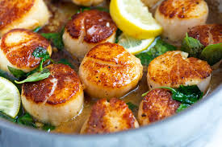
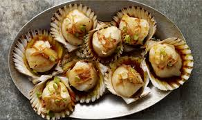
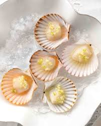

Scallops
Ways to Eat Them: Seared, smoked, other ways.
Pros: Sometimes it is a bunch of little scallops, and sometimes it is like one big scallop. You can buy packages of very small frozen ones at Trader Joe's.
Cons: All scallops have dozens of tiny, disgusting eyeballs, and they look like this.
The Most Delicious Foods to Dunk in a Deep Fryer.
The Best Foods to Throw on the BBQ.
  